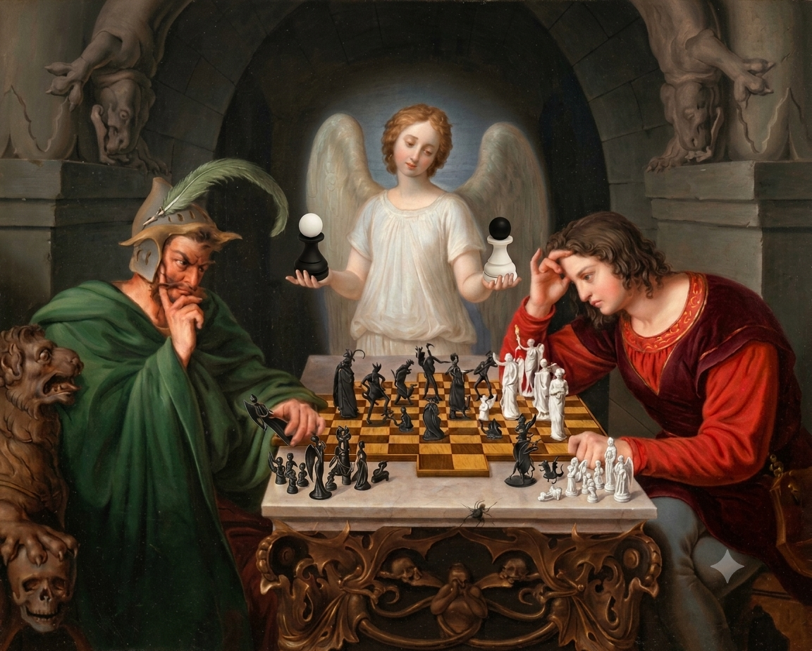
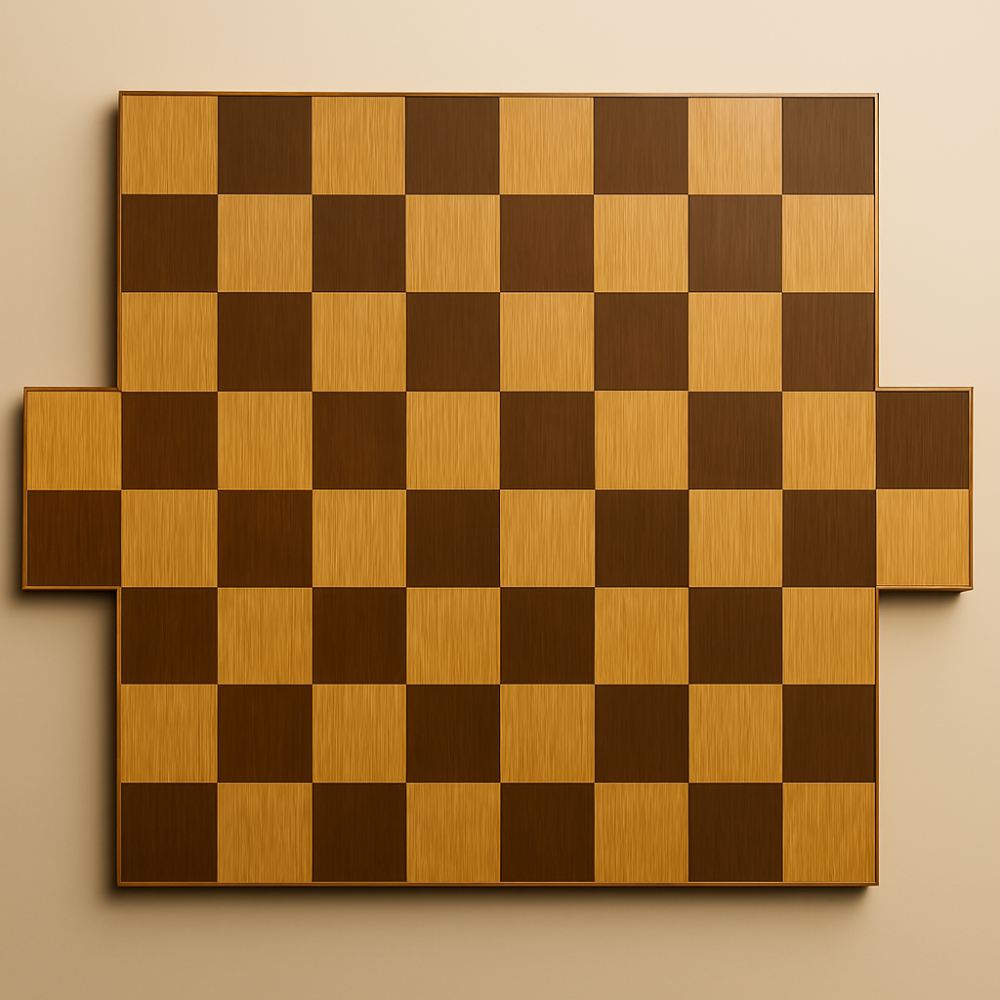
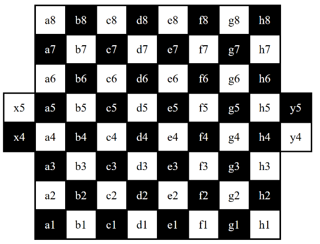
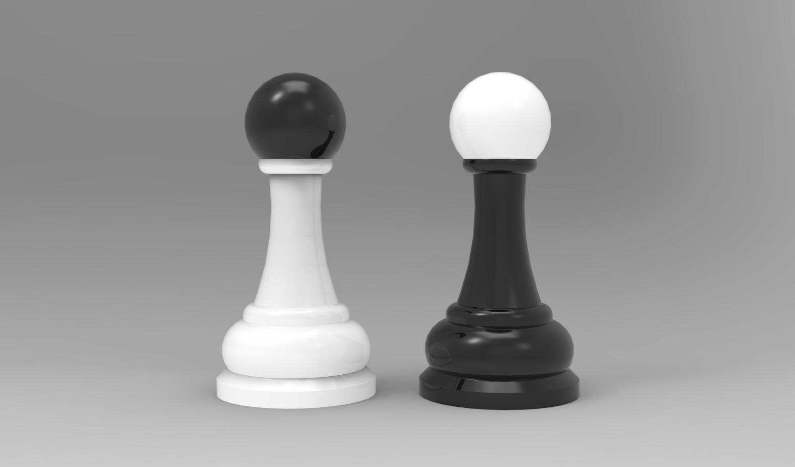
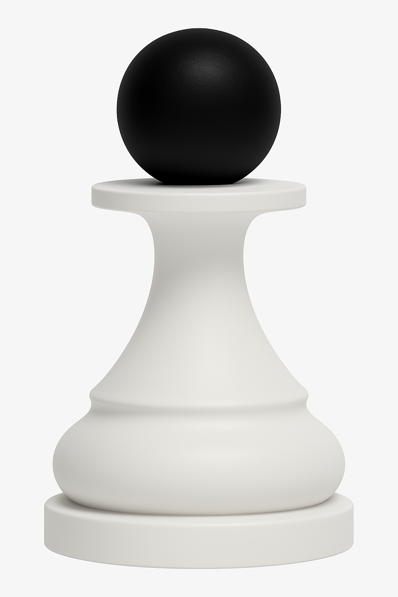
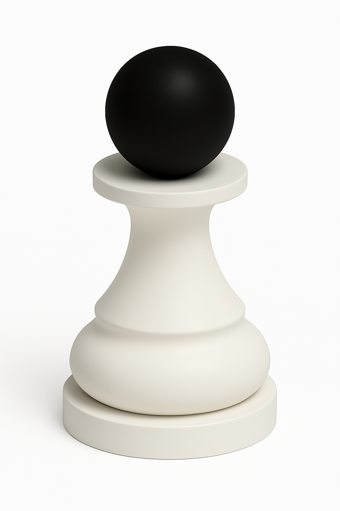
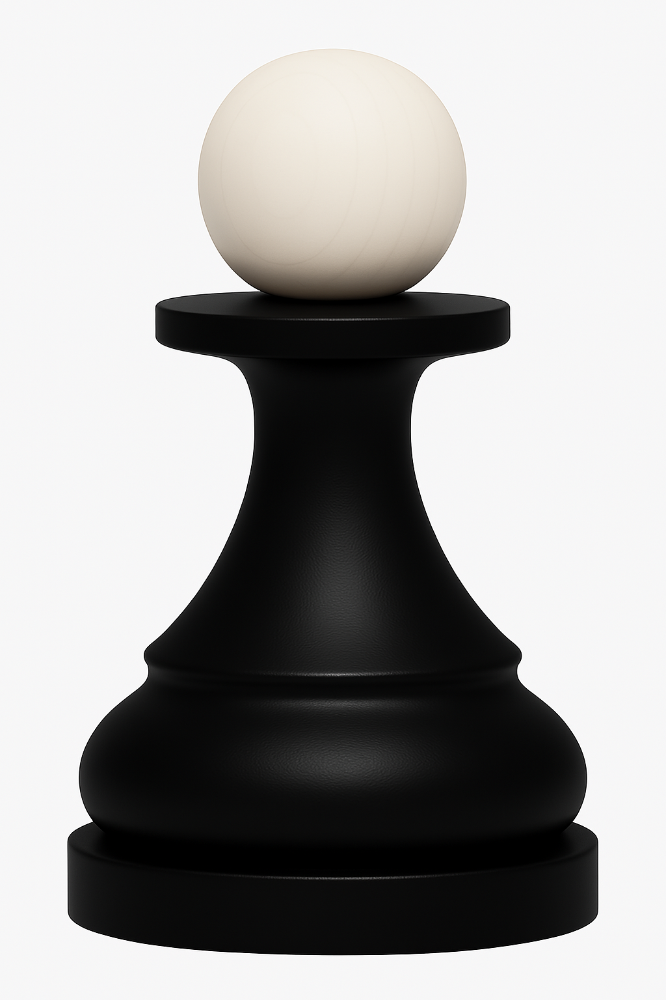
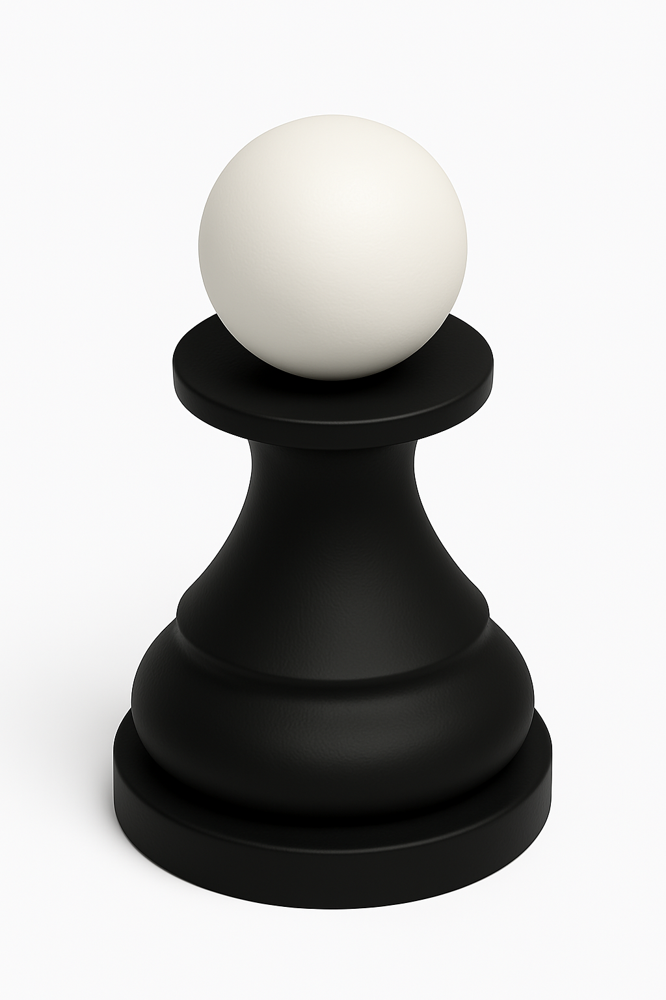

An Original Chess Variant for the Era of Human–AI Collaboration

Official allegorical artwork representing strategy, creativity and the symbolic role of the Angel.
About the Work
Chess of the Angels is an original chess variant designed for the era of human–AI collaboration.
It preserves the essential objective and strategic foundations of classical chess while introducing a 68-square board, four lateral Angel Wing squares and a new bicolour piece called the Angel.
The Angels begin the game inactive and acquire their ordinary movement and control capabilities when an opposing piece completes a legal move on the corresponding territorial frontier.
The Official Board

The official 68-square board with four lateral Angel Wing extensions.
68-Square Playing Surface
The board retains the traditional 8 × 8 central grid and adds four playable lateral squares in ranks 4 and 5. These extensions form part of the board and may be occupied by any piece whose legal movement reaches them.
Registered European Union design: 68-square board — EUIPO No. 015110333-0001

Official coordinate system showing files a–h and the lateral squares x4, x5, y4 and y5.
Coordinates and Angel Wings
The traditional files a–h and ranks 1–8 are retained. The additional lateral positions are identified as x4, x5, y4 and y5. These squares are incorporated into the official algebraic notation of the game.
Protected subject matter: Coordinate representation of the registered board design — EUIPO No. 015110333-0001
The Angel Pieces
The Angel pieces use a pawn-inspired silhouette and an inverted bicolour identity.

The White Angel and Black Angel displayed together.
Bicolour Pawn-Inspired Design
Each player begins with two Angels. The White Angel has a light body and dark head; the Black Angel has a dark body and light head. Their pawn-inspired form integrates them visually with a classical chess set while keeping them immediately distinguishable.
Registered European Union designs: Black Angel — EUIPO No. 015111340-0001 White Angel — EUIPO No. 015111340-0002

White Angel — front view.
White Angel
Light body and base with a contrasting dark spherical head.
EUIPO No. 015111340-0002

White Angel — perspective view.
White Angel in Perspective
A three-dimensional reference for manufacture, modelling and digital representation.
EUIPO No. 015111340-0002

Black Angel — front view.
Black Angel
Dark body and base with a contrasting light spherical head.
EUIPO No. 015111340-0001

Black Angel — perspective view.
Black Angel in Perspective
A complementary three-dimensional reference for manufacture and implementation.
EUIPO No. 015111340-0001
Legal and Registration References
The following identifiers correspond to the registered European Union designs associated with the board and Angel pieces.
Legal deposit and Safe Creative: No verified registration number has been provided for publication on this page. Add the exact number here only after confirming it from the official certificate. An EUIPO design number is not the same as a national legal-deposit number.
Official QR Access
This mobile-friendly page may be linked from a QR code printed in the rulebook, on the game box or in official documentation.